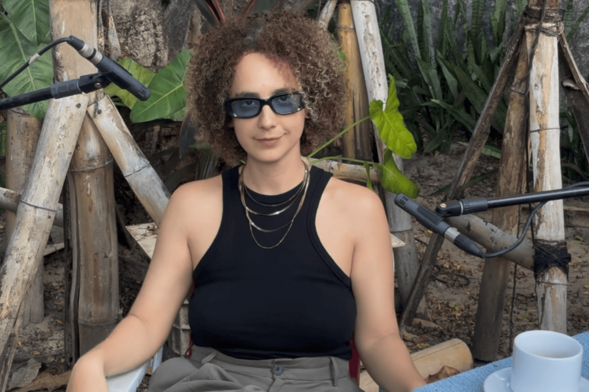
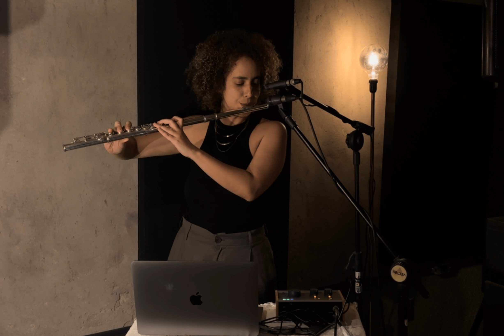

Henrique Gomes is the editor of SONA Magazine, a researcher, and an enthusiast of experimental practices in sound and art.
Clarisse Aires approached experimentation without skipping any steps. She studied theory, honed her performance skills, and dedicated herself to mastering the flute through the rigorous training of a university music program, where, as she puts it, “competence is measured by how precisely you can copy.” This is a path many musicians follow: pursuing formal excellence, mastering repertoire, achieving perfect pitch, and staying faithful to the score. Yet, along the way, Clarisse discovered something that unsettled her. Gradually, she began making room for improvisation, stepping out of the role of interpreter, and moving closer to her own inventiveness.
Within this journey lies a creative tension between structure and freedom, between what is learned and what must be unlearned to create. Clarisse operates within this paradox. With a solid musical foundation, she chose free experimentation as a space for discovery. In this sense, her work resonates with artists like Toshimaru Nakamura, who, after years as a guitarist and sound engineer, abandoned conventional instruments to make music with a no-input mixing board, a console connected to itself, generating only noise, feedback, and instability.
Another comparison might be Tom Zé, whose career is defined by a constant reinvention of Brazilian song. Trained in composition and conducting in Bahia, Tom Zé never abandoned technical sophistication, but used it as a springboard for disobedience, incorporating industrial noises, subverting popular music structures with collages, irony, and formal experimentation. In Clarisse’s work, the same urgency to disrupt expectations of the “correct sound” becomes a deliberate technique, allowing music to emerge from risk.
Today, her drive to experiment takes shape in work that resists easy categorization. Clarisse is producing her next album, Trocando de Pele (“Shedding Skin”), a title referencing how snakes must shed their old skin to continue living. The metaphor is precise. Her music carries a similar impulse for transformation, leaving behind forms that no longer serve. While rooted in Brazilian music, her path is not bound by genre or fixed structures. Melody and arrangement coexist with noise, fragments, breath, and silence, each element treated as possibility, not ornament.
Trocando de Pele evokes a lineage of artists who navigate the boundaries between popular and experimental music without attempting to resolve them. There is something of Juçara Marçal’s Delta Estácio Blues (2021), where electronic noise and rhythmic ancestry pulse together, or of Arrigo Barnabé’s 1980s explorations, when song was dissected to reveal its fissures. Similarly, Clarisse challenges the repertoire that shaped her. She reinterprets it, strains it. Using the flute as a guiding thread, she transforms the instrument into an extension of voice and thought, dissolving hierarchies between composition and improvisation, between execution and experimentation.
This movement between languages and practices is not a fusion, but an invention of possible spaces. “Experimentation doesn’t fit everywhere”, Clarisse says, “so my process is precisely about making it fit”. This statement encapsulates her work: creating conditions for distinct elements to coexist, even in friction. The quest to make herself fit as an artist is also political. She points out that being a woman in environments that systematically echo Brazil’s structural machismo often requires constant vigilance and resistance.
In this sense, Clarisse understands that making music is also about creating space. Her music emerges from this dual gesture: opening room for sound and, alongside it, opening space for herself, both on stage and in the studio.
In conversation with SONA, Clarisse emphasizes that the flute is not only the gleaming, disciplined European orchestral instrument. Long before that, it was ancestral breath, a tool for healing and communication between worlds, present in Indigenous rituals across the globe, “echoing through many forests”. She also highlights that the flute is a sound of celebration and resistance in Brazil, heard in the pifes of the Northeast, the Cabaçal, and street processions. In this sense, the flute is an instrument in contest, layered with historical, cultural, and symbolic tensions that do not always align.
Clarisse does not aim to erase these layers or cling to any single one. Instead, she puts these inheritances under tension, dismantling the idea of a “pure” sound. By using pedals, effects, distortion, and vocal overlays, she expands the flute’s expressive range, reimagining it as an electronic medium. Her gesture is subtle; rather than denying the flute’s classical brilliance, she gently sabotages it, allowing noise to seep in, interweaving voice, fragments, and silence.
The result is a listening experience that demands attention. We are no longer facing a “clean” instrument, but an expanded sonic body where error, deviation, and the unexpected are welcomed. In deconstructing brilliance, Clarisse questions the ideal of perfection that has historically excluded divergent voices, bodies, and sounds.
The voice frequently appears in her compositions, but not in the traditional sense of a “singer”. Clarisse sings, yes, but as one who breathes, or extends the breath of the flute. Her voice does not occupy the centre, but merges with the instrument, body, and environment. It is a singing that eludes categorization, like Hermeto Pascoal in Música da Lagoa (1985), where the boundaries between melody, noise, speech, and breath dissolve in favour of a broader, organic musicality.
More than refusing to choose between flautist or singer, composer or improviser, what defines her work is a refusal of definition itself. Her sound is structured through instability, forms appear only to be transformed, patterns emerge but never settle.
This open listening, embracing mistakes, returns, repetition, and deviation, is central to Clarisse’s process. She often records herself alone at home, and from these improvised sessions, she begins shaping her compositions. It is a method from the inside out, rooted in practice, in trial and error. Sound starts as exploration and gradually becomes structure.
The two tracks accompanying this interview, recorded especially for SONA, act as direct windows into Clarisse’s creative process. In Anambezz, layered whistles and flutes create a noisy, pulsing foundation over which she improvises live. What we hear is a search, each note seems to find its place in space, as if the sound is organizing itself in real time. In Pequenos Rituais Cotidianos (“Small Daily Rituals”), the flute appears alone, free, without harmonic cushion or rhythmic guide, a risky scenario that reveals another kind of force, more concentrated, more subtle.
The raw exposure of Clarisse’s music evokes the practice of deep listening, pioneered by composer and accordionist Pauline Oliveros. This is an expanded form of listening, encompassing physical sound, environment, body, inner sensations, and silence. Oliveros incorporated both technological creativity and a spiritual dimension, proposing experiences of presence that transcend time and sonic space. While Clarisse does not follow this path strictly, the kinship is clear. In her work, improvisation serves as a sensitive tool to access less visible layers of creation. As with Oliveros, listening here is a radical act of attention, transforming sound into a field open to the unknown.
The tracks presented here are not conventional finished pieces. They resemble small mutations, structures in transition, where technique submits to chance, and chance responds unpredictably. It is as if the artist is, in fact, shedding her skin right before us, not as an empty metaphor, but as a living, breathing process.
Henrique Gomes is the editor of SONA Magazine, a researcher, and an enthusiast of experimental practices in sound and art.